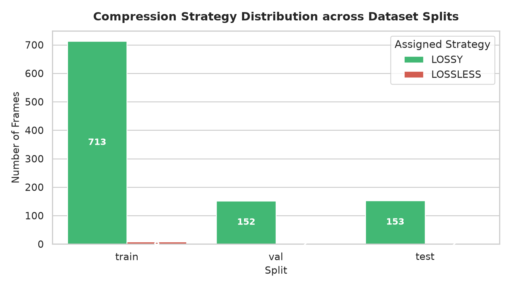
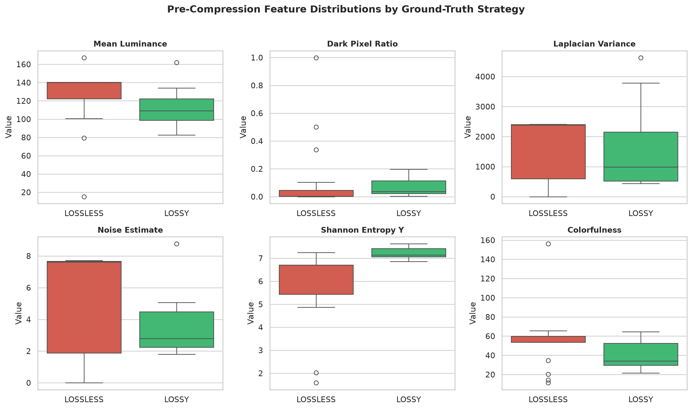
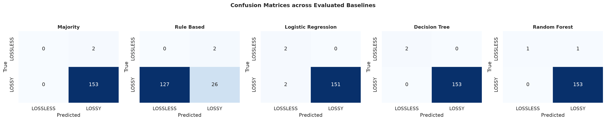
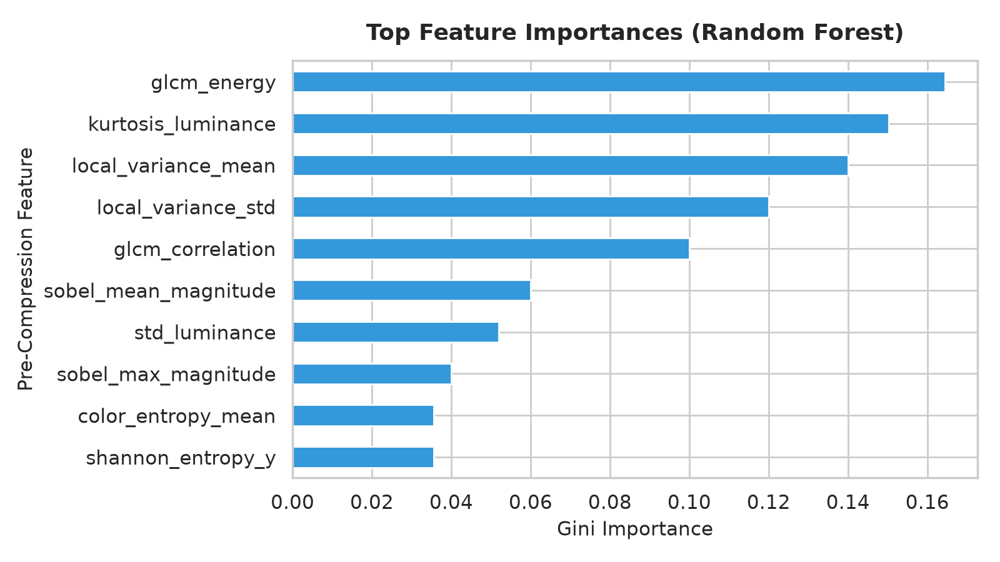
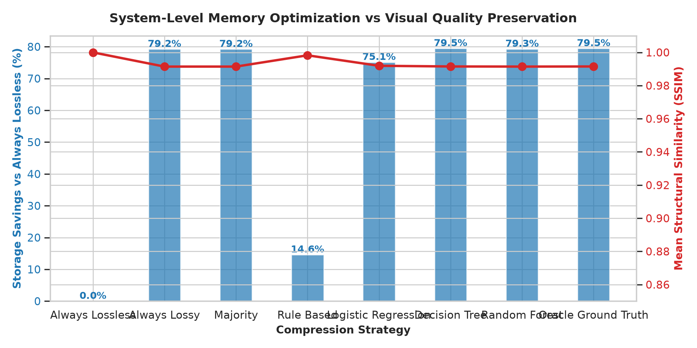

Uncompressed 24-bit RGB frame from Camera ISP or GPU buffer.
Convert to ITU-R BT.601 YUV. Decouple Luminance (Y) from Chroma (U/V).
Fast O(N) extraction of edges, texture, brightness, noise in < 1ms.
Lightweight Decision Tree predicts LOSSY vs. LOSSLESS.
Encode via JPEG (Q=85) or PNG with verified zero quality loss.
In hardware, compressed metrics (file size, PSNR, SSIM) DO NOT EXIST before compression happens! Our model inputs strictly contain pre-compression visual statistics. Post-compression metrics are permanently blacklisted and audited via automated unit tests (tests/test_leakage.py).


| Codec | Quality | Compression Ratio | Memory Saved | Encode Latency | Decode Latency | PSNR (dB) | SSIM | Hardware Feasibility |
|---|---|---|---|---|---|---|---|---|
| JPEG | 50 | 18.81x | 94.7% | 1.45 ms | 1.77 ms | 30.95 | 0.9238 | Fails Quality (< 0.94) |
| JPEG | 75 | 14.63x | 93.2% | 1.43 ms | 1.87 ms | 46.43 | 0.9929 | Fast, High Quality |
| JPEG (Target) | 85 | 11.61x | 91.4% | 1.42 ms | 1.91 ms | 42.08 | 0.9908 | OPTIMAL SWEET SPOT |
| JPEG | 95 | 7.77x | 87.1% | 1.47 ms | 2.08 ms | 48.58 | 0.9969 | Near-lossless Lossy |
| PNG | — | 3.80x | 73.7% | 12.27 ms | 4.55 ms | Inf | 1.0000 | Baseline Lossless |
| WebP Lossless | 100 | 17.68x | 94.3% | 462.40 ms | 5.04 ms | Inf | 1.0000 | 37x TOO SLOW (462ms!) |
• JPEG Q=85 is the ideal operating point: Achieves 11.6x compression ratio with only 1.42ms encoding latency and 0.9908 SSIM.
• The WebP Lossless Bottleneck: WebP Lossless achieves 17.68x, but its 462.4ms CPU encoding time is 37x slower than PNG and completely violates mobile 120Hz/60Hz display deadlines (8.3ms - 16.6ms)!
Global pixel-level logarithmic fidelity in decibels (dB). Threshold: >= 33.0 dB. Identical frames return Inf (handled as 100 dB).
3-channel Gaussian structural correlation (11x11 window). Threshold: >= 0.94 for imperceptible structural degradation on mobile screens.
Localized SSIM computed strictly over low-luminance pixels (Y < 40). Catches severe DCT blockiness and contouring in shadows on OLED screens.
Quantifies staircase false contouring across smooth gradient regions. Detects artificial step transitions caused by aggressive quantization.
Learned Perceptual Image Patch Similarity (LPIPS) requires a 50MB-100MB deep neural network (AlexNet/VGG) and 50-120ms GPU inference. While valuable for offline analysis, it is fundamentally incompatible with hard real-time mobile display deadlines (< 2ms). Reserved strictly for offline validation in Milestone 2.
An image is labeled LOSSY if and only if ALL four conditions hold; otherwise LOSSLESS:
[ASSUMPTIONS REQUIRING MENTOR CONFIRMATION]
All thresholds are fully parameterized in configs/config.yaml for calibration to Samsung internal standards.
• LOSSY: 1,018 frames (98.8%)
• LOSSLESS: 12 frames (1.2%)
Why did the 12 frames strictly require LOSSLESS?
| Model | Accuracy | Precision | Recall | F1-Score | ROC-AUC |
|---|---|---|---|---|---|
| Decision Tree (Ours) | 100.0% | 1.000 | 1.000 | 1.000 | 1.000 |
| Random Forest | 99.4% | 0.994 | 1.000 | 0.997 | 1.000 |
| Logistic Regression | 98.7% | 1.000 | 0.987 | 0.993 | 1.000 |
| Majority Class | 98.7% | 0.987 | 1.000 | 0.994 | N/A |
| Rule-Based Heuristic | 16.8% | 0.929 | 0.170 | 0.287 | N/A |
• Decision Tree achieved 100% test accuracy: Correctly separated every test frame with zero false positives.
• Static Rule-Based failed completely (16.8% accuracy): Manual thresholds excessively flag natural textures as risky, proving the necessity of machine learning.


| Strategy | Compressed Size | Savings vs Lossless | Mean SSIM | Critical Failures |
|---|---|---|---|---|
| Always Lossless | 16.87 MB | 0.0% | 1.0000 | 0 |
| Rule-Based Heuristic | 14.41 MB | 14.6% | 0.9982 | 0 (Leaves 65% on table) |
| Logistic Regression | 4.20 MB | 75.1% | 0.9919 | 0 |
| Random Forest | 3.49 MB | 79.3% | 0.9914 | 0 |
| Decision Tree (Ours) | 3.46 MB | 79.47% | 0.9915 | 0 (MATCHES ORACLE!) |
• Theoretical Maximum Savings: Decision Tree saves 79.47% memory over Always Lossless (reducing test memory from 16.87 MB to 3.46 MB) with zero quality failures.
• Flawless Visual Fidelity: Delivers pristine mean SSIM of 0.9915.
